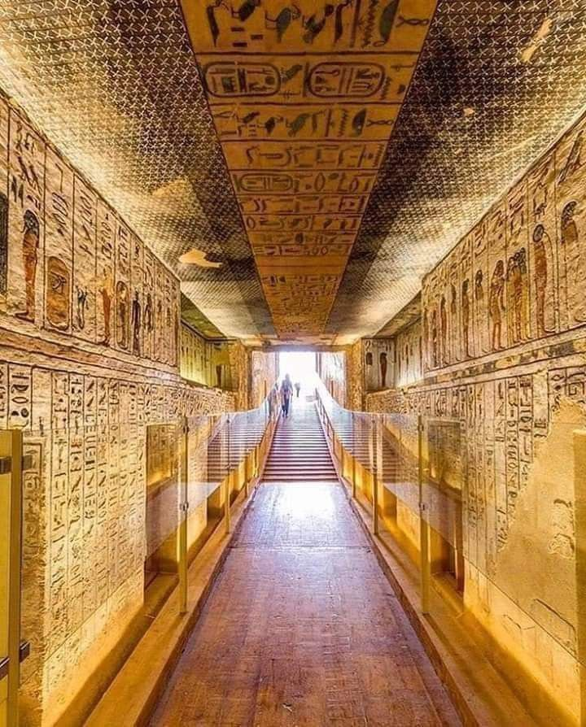

The Valley of the Kings is an ancient burial ground located on the west bank of the Nile near Luxor, Egypt. It was used as a royal burial site for many pharaohs of the New Kingdom. The valley is famous for its richly decorated tombs, including the tomb of Tutankhamun.